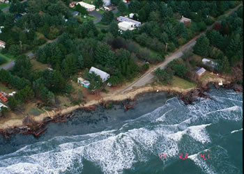

Orientation: Shoreline
Property Assessment
Shorelines are among the most dynamic places on our planet. Shorelines are
places of constant change and in most locations either erosion
or deposition is taking place through the actions of winds, waves,
and currents. The rate of change is generally very slow, however,
during severe storms the change can be dramatic, with tons of
sediment being removed or deposited in just a few hours.
Shorelines are also locations that attract people. Their scenic
beauty and recreational opportunities make them highly desirable
for both year-round and vacation housing. However, the dynamic
and sometimes violent nature of shorelines can make some of them
risky locations for development. Examine the photo set at left
to see how much change can happen in just one season of storms. |
|

Site of extensive shoreline erosion on the Washington coast during winter storms of 1997 and 1998.
Click to see before and after photos |